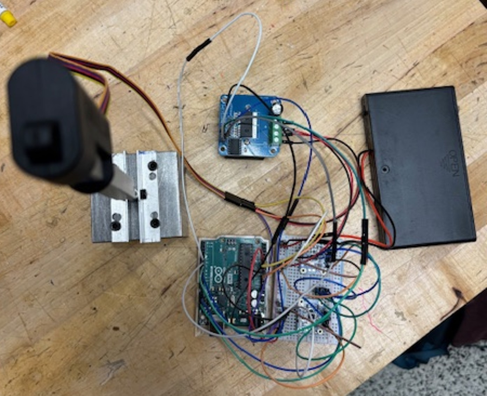

Moving Mass Control for A Hypersonic Testbed
08/2024 – 05/2025 · Research
Contributors
John Dec.
Overview
HyperSat is a proposed hypersonics testbed that aims to have a satellite (with a heat shield) repatedly aerobrake in Earth's atmosphere. Currently, it is difficult to simulate both aerodynamic pressure effects and thermodynamic enthalpy effects simultaneously in wind tunnels. Furthermore, the costs of operating these tunnels is incredibly high. HyperSat aimed to address this challenge by flying payloads at hypersonic speeds through these passes. I worked on studying the potential effectiveness for moving mass control (via a linear actuator moving a mass) as a method of attitude guidance for this system.
Results
- Developed and derived a sliding mode control law in simulation to handle pitch guidance for this system.
- Machined a physical prototype and wired an electrical setup for potential hardware testing of the system.
Relevant Links
[poster]

The machined CubeSat model intended for use in testing.

A flat setup of the wiring schematic powering the mass actuator.